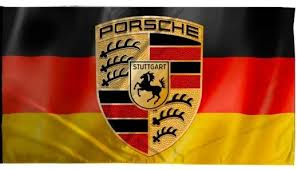

• Sports Cars: 911, Boxster, Cayman • Sedans & EVs: Panamera, Porsche Taycan (electric) • SUVs: Cayenne, Macan including electric variants

The 110 PS (81 kW; 110 hp) 911T was also launched in 1967 with Type 901/03 engine. The 130 PS (96 kW; 128 hp) model was renamed the 911L with Type 901/06 engine and ventilated front disc brakes. The brakes had been introduced on the previous 911S. The 911R with 901/22 engine had a limited production (20 in all), as this was a lightweight racing version with thin fiberglass reinforced plastic doors, a magnesium crankcase, twin overhead camshafts, and a power output of 210 PS (154 kW; 207 hp)
A clutchless semi-automatic Sportomatic[13][14] model, composed of a torque converter, an automatic clutch, and the four-speed transmission was added in Autumn 1967. It was canceled after the 1980 model year[15] partly because of the elimination of a forward gear to make it a three-speed.[15]